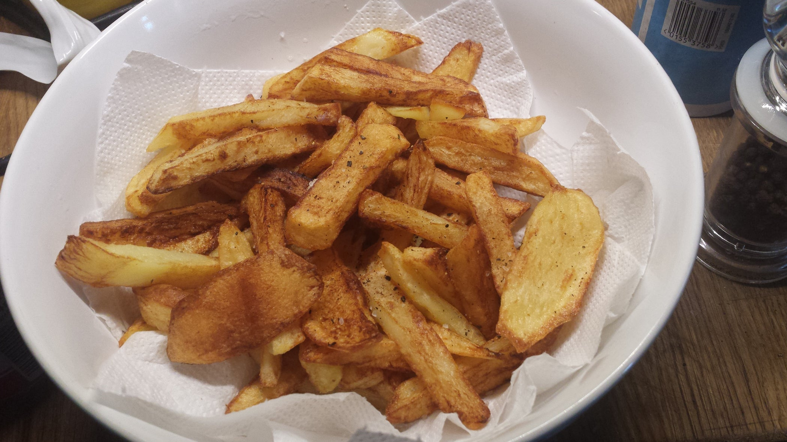

Potato Chips Recipe

A Traditional British Chip
A recipe for traditional British chips. A healthier variant, cooked in the oven rather than fried.
These will be less greasy and more seasoned for flavour. They use Maris Piper potatoes for that extra crisp.
- 1kg Maris Piper Potatoes
- Vegetable Oil
- Your favourite herbs/spices
- Optionally peel the potatoes. This is not necessary as the skin is obviously edible but they will look better.
- Cut the potatoes into slices, and then into chip shapes. Place into a pot of water with salt.
- Gently boil the chips until they soften but don't fall apart. Strain off the water and let them cool a little on a flat tray so the water evaporates.
- Once dry, massage with oil and sprinkle over some salt, pepper, and any herbs or spices desired.
- Cook the chips in the oven for around 30 minutes at 200C, or until they have a nice crispy brown appearance.